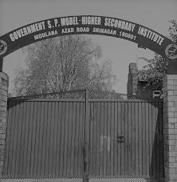
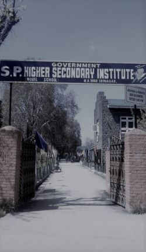

Sri Pratap Higher Secondary School has history of 147 years. The school
was established in 1874. Ranbir Singh was the first Dogra ruler who took

interest in the advancement of education in the State of Jammu and
Kashmir. In 1874, two schools were opened in the twin cities of Jammu
and Srinagar. The schools were named as Ranbir High School Jammu and
Srinagar Middle School. The Srinagar Middle School taught primary
subjects of Sanskrit and Persian, however not as a regular system. The
subjects were taught in the same way as in Maktabs and Chat halls. There
was a separate department of teaching Arabic to Muslim students. In 1883
there were 450 boys on its roll.
It was with the advent of the reign of Sri Pratap Singh of Jammu and
Kashmir in 1885 AD that modern education in the State took shape. Dr.
A.K. Mitra (Superintendent of Schools) known as the father of education
in Kashmir, zealously worked for the upliftment of Kashmirisand raised
the status of Srinagar Schools to a full-fledged Anglo Vernacular
School, introducing English and imparting instructions according to
Panjab University Curriculum.

In 1891, the school was raised the status of Srinagar High School and
was later on called Sri Pratap High School.
In 1912 AD S.P. School was reorganized and a postgraduate was appointed
as the Head Master along with two trained graduates as teaching
assistants. In 1913-1914 provision of teaching science and drawing
subjects was introduced in the school. Later in 1921 Physical Education
was introduced with accompaniment of music . In 1949-50 AD Mr. M.M.
Kazim, the then Director School Education called a conference on social
education and discussed the reorganisation of schools in Jammu & Kashmir
state. On the recommendation of the conference, S.P. High School was
elevated to S.P. Higher Secondary School as was affiliated to J&K
University. At the same time crafts like wood carving, paper mache,
embroidery, spinning and weaving were introduced in the school.
In 2015, the school was raised to the status of "Model School" by the
State Government, Chief Minister, Mufti Mohammad Sayeed inaugurated the
school as Model School on 14 September 2015.